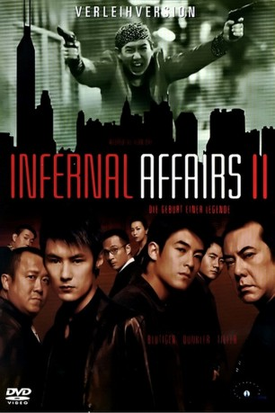
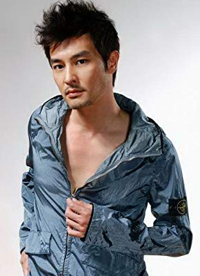

#2837 Infernal Affairs 2 - Abstieg in die achte Hölle
 
 IMDB-Wertung: 7.4 / 10
IMDB-Wertung: 7.4 / 10  Metascore: 0
Metascore: 0 
Hongkong, 1991: Nach der Ermordung seines Vaters, übernimmt der Geschäftsmann Ngai Wing Hau die Kontrolle über die Triaden. Keine leichte Aufgabe, denn auf den Thron der Unterwelt haben bereits andere Gangsterbosse spekuliert, unter anderem auch der gewitzte Hon Sam, dessen Frau Mary maßgeblich an der Ermordung Ngais Vater beteiligt war. Auch Sams Freund, der Polizist Wong Chi Shing würde Ngai lieber am Boden sehen, als in der Position über Drogenschmuggel in Hongkong verfügen zu können. Da Wong noch eine Rechnung mit Ngais Familie offen hat, kommt es zu einem fiesen Machtkampf, in dem Gangster und Polizei gegen den Triadenboss intrigieren. Zwei Spitzel auf den beiden jeweiligen Seiten sind dabei besonders tragische Schachfiguren.
Jahr: 2003
Dauer: 119 Minuten
FSK: 16
Land: Hong-Kong Studio: MC-OneTonspuren:
Untertitel: Englisch,
Auflösung: 1080p (1920x792) Größe: 7342 MB
Genre: Action, Thriller, Drama, Krimi
Regisseur: Wai-Keung Lau, Alan Mak
Drehbuch: Alan Mak, Felix Chong, Felix Chong, Alan Mak
Soundtrack: Kwong Wing Chan
Darsteller:
 Anthony Chau-Sang Wong als SP Wong Chi Shing
Anthony Chau-Sang Wong als SP Wong Chi Shing Eric Tsang als Hon Sam
Eric Tsang als Hon Sam Carina Lau als Mary Hon
Carina Lau als Mary Hon Edison Chen als Officer Lau Kin Ming
Edison Chen als Officer Lau Kin Ming Shawn Yue als Chan Wing Yan
Shawn Yue als Chan Wing Yan Jun Hu als SP Luk
Jun Hu als SP Luk Kai Chi Liu als Uncle John
Kai Chi Liu als Uncle John- Ricardo Mamood-Vega als Private Investigator #1
- Brandon Rhea als Private Investigator
- Francis Ng als Ngai Wing Hau
 Tung Cho 'Joe' Cheung als Kwun
Tung Cho 'Joe' Cheung als Kwun- Henry Fong als Gandhi
- Peter Ngor als Negro
- Arthur Wong als Wah
- Teddy Chan als Ching
- Chung-yue Chiu als Mary
- Phorjeat Keanpetch als Sunny
- Say Ping Yap als Socialites
- Ping Hui Tay als Hung the Solicitor
 Roy Cheung als Law
Roy Cheung als Law- Chapman To als Tsui Wai Keung
- Hui Kam Fung als Cadet School Principal
- Alexander Chan als Yee
-  Andrew Lin als Chung, Ngai's Brother
- Kara Hui als Hau's Sister
- Chi Keung Wan als Superintendent Leung
- Chaucharew Wichai als Paul
- Xiao Hai als Cheung
- Kelly Fu als May
- William Duen Wai-Lun als Sergeant Chan
- Jonathan Wing Hong Cheung als Billy
- Roderick Lam als Father Kwun's Bodyguard
- Kam Loi Kwan als Father Kwun's Bodyguard
- Chung Ka Lung als Father Kwun's Bodyguard
 Wai Lam als Hau's Button Man #1
Wai Lam als Hau's Button Man #1- Yui Sang Wong als Hau's Button Man #2
- Chu Chi Ho als Hau's Button Man #3
- Tiffany Cheung als Killer at Nightclub
- Ken Ling als Killer at Restaurant
- Tony Tai als Killer at HiFi Shop
- Siu-Kwan Chan als Killer at Lift Lobby
- Roger Lee als Killer on Motorbike
- Lau-fai Lo als Killer in Thailand
- Vincent Chi Mo Chun als OCTB Constable #1 , as Vincent
- Kin-Yung Tsang als OCTB Constable #2 , as Tenny
- Cheung Pui Sai als OCTB Constable #3
- Frank Michael Liu als OCTB Constable #4
- Man Shing Wong als OCTB Constable #5
- Cheung Yuk Sun als OCTB Constable #6 , as Simon
- Tang Tai Wo als Sam's Button Man #1
Datei: X:\HD-Eastern-Collections\Infernal Affairs\Infernal Affairs 2 - Abstieg in die achte Hölle (2003, FSK16, 1920x792).mkv seit 22.12.2015
Festplatte: HD Eastern+Western
 Alle Filme aus Gruppe 'HD-Eastern-Collections\Infernal Affairs'
Alle Filme aus Gruppe 'HD-Eastern-Collections\Infernal Affairs'